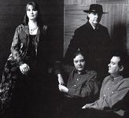

Celtic Lyrics Corner
>
Artists & Groups
> Clannad

Clannad
Members
:
Ciarán Brennan,
Máire Brennan
, Noel Duggan & Padraig Duggan
Albums
:
1972 -
Clannad
1974 -
Clannad 2
1976 -
Dúlamán
1980 -
Crann Ull
1982 -
Fuaim
1984 -
Magical Ring
1984 -
Legend
1985 -
Macalla
1987 -
Clannad In Concert
1988 -
Sirius
1989 -
Pastpresent
1989 -
Atlantic Realm
1992 -
Anam
1993 -
Banba
1995 -
Themes
1995 -
Lore
1997 -
Landmarks
2005 -
Live In Concert
Singles
:
1989 -
Hourglass
Also on
:
The
Warriors Of Virtue
and
Message In A Bottle
soundtracks